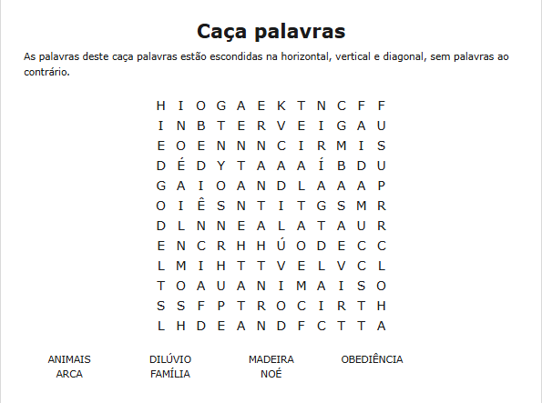
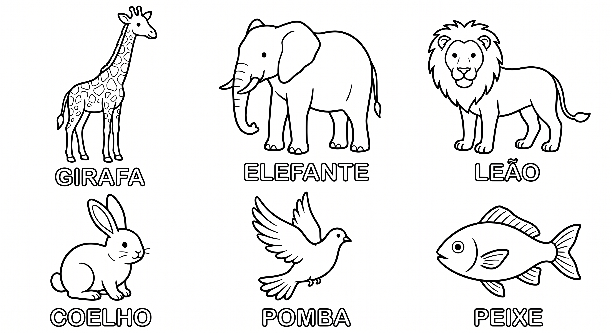
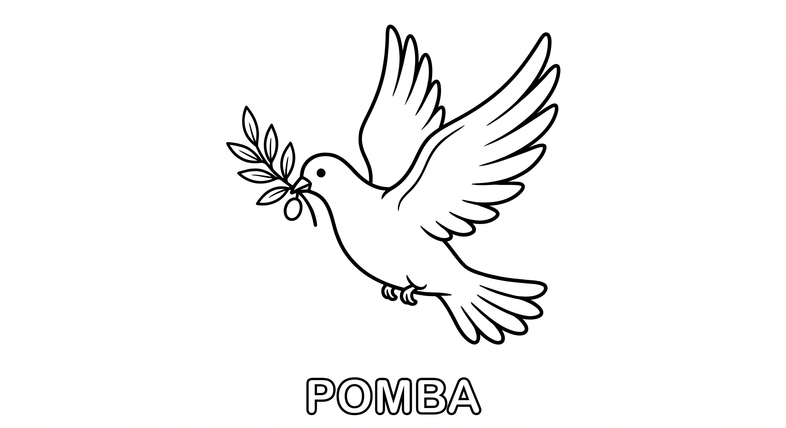
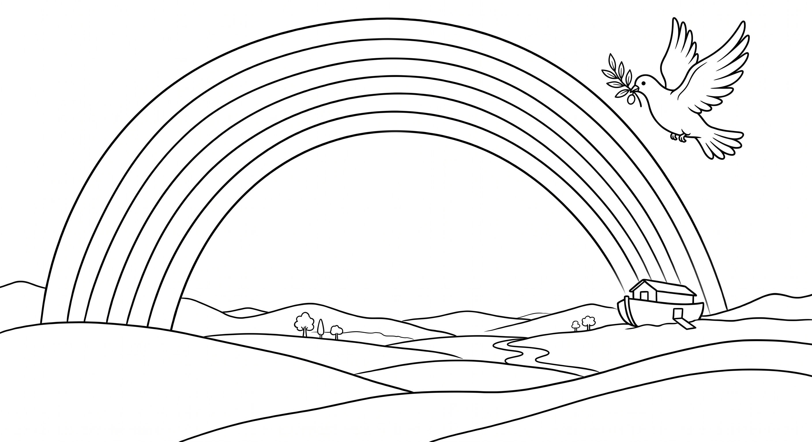

📖 30 Dias com Deus
Semana 2 – A Arca de Noé
Dia 8
"Noé fez tudo conforme Deus lhe havia ordenado."
Gênesis 6:22
Deus pediu a Noé que construísse uma grande arca para salvar sua família e os animais do dilúvio. Mesmo sem entender totalmente, Noé obedeceu. A obediência a Deus é o primeiro passo para viver milagres.
🔍 Atividade: Caça-palavras
Encontre as palavras escondidas e marque-as na lista.

Dia 9
"De todos os animais... entraram para Noé na arca."
Gênesis 7:8-9
Animais de todas as espécies vieram até a arca. Deus cuidou de cada um, grandes e pequenos. Isso mostra que toda a criação é valiosa para Ele.
🦒 Atividade: Animais para colorir e recortar
Pinte os animais, recorte e cole ao redor da arca que você desenhar no espaço abaixo. Escreva o nome de cada um.

Dia 10
"E a chuva caiu sobre a terra quarenta dias e quarenta noites."
Gênesis 7:17-18
Durante os dias do dilúvio, Noé e sua família ficaram protegidos dentro da arca. Hoje podemos confiar que Deus também nos guarda nos momentos difíceis.
🛡️ Atividade: A arca da proteção
Desenhe uma grande arca. Dentro dela, escreva ou desenhe pessoas, sentimentos ou situações que você gostaria de entregar a Deus para que Ele proteja.
Dia 11
"O Senhor é o meu pastor; nada me faltará."
Salmo 23:1
Noé experimentou o cuidado de Deus dentro da arca. Da mesma forma, Jesus é o nosso bom pastor que nos protege e supre todas as necessidades.
✏️ Atividade: Ligue os pontos
Ligue os números em ordem e descubra o desenho. Depois pinte e escreva uma frase de esperança.

📖 30 Dias com Deus
Semana 2 – A Arca de Noé
Dia 12
"E a pomba voltou a ele... uma folha de oliveira em seu bico."
Gênesis 8:11
Noé soltou uma pomba para ver se as águas tinham baixado. Quando ela voltou com um ramo de oliveira, Noé soube que a terra estava secando.
🕊️ Atividade: Símbolo da esperança
Pinte a pomba e o ramo de oliveira. Depois escreva algo que lhe traz esperança.

Dia 13
"O meu arco tenho posto nas nuvens..."
Gênesis 9:13
Depois do dilúvio, Deus colocou um arco-íris no céu como sinal da Sua promessa. O arco-íris nos lembra que Deus é fiel.
🎨 Atividade: Colorir o arco-íris
Pinte cada faixa do arco-íris. Em cada cor, escreva uma promessa de Deus para você.

Dia 14
"Confia no Senhor de todo o teu coração..."
Provérbios 3:5
Noé confiou em Deus quando construiu a arca, mesmo sem ver a chuva. A fé é confiar em Deus mesmo quando não entendemos tudo.
🤝 Atividade: Dinâmica da confiança
Com um familiar, um fecha os olhos enquanto o outro guia com a voz. Depois, responda:
- Como foi confiar no outro?
- Podemos confiar em Deus da mesma forma?
- Escreva uma oração pedindo mais confiança.